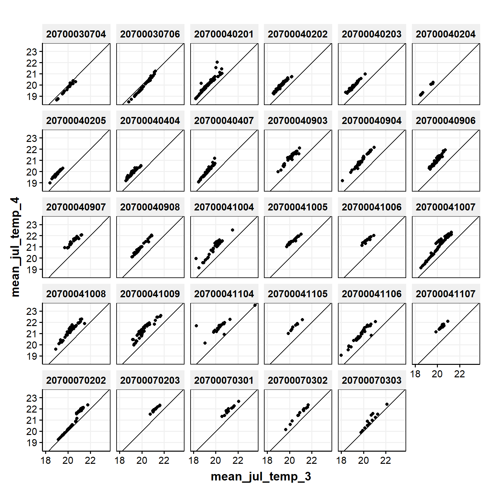
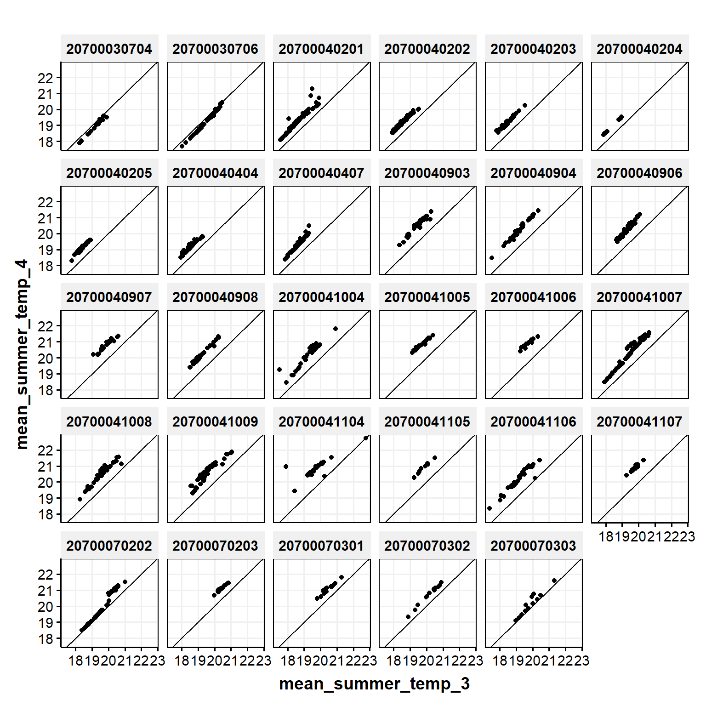

Code
library(getPrepareWBData) # for theme_publication()
library(tidyverse)Libraries
library(getPrepareWBData) # for theme_publication()
library(tidyverse)d13 <- read.csv('C:/Users/bletcher/OneDrive - DOI/projects/temperatureModelVersionComparison/data/in/sheds-temp-model-v1.4.0-20231208/sheds-temp-model-v1.3.0.csv')
d14 <- read.csv('C:/Users/bletcher/OneDrive - DOI/projects/temperatureModelVersionComparison/data/in/sheds-temp-model-v1.4.0-20231208/sheds-temp-model-v1.4.0.csv')
catchHucs <- read.csv('C:/Users/bletcher/OneDrive - DOI/projects/temperatureModelVersionComparison/data/in/sheds-temp-model-v1.4.0-20231208/catchments-hucs.csv')d13 <- d13 |> mutate(ver = 3)
d14 <- d14 |> mutate(ver = 4)
d <- bind_rows(d13, d14) |>
left_join(catchHucs, by = c("featureid" = "catchment_id"))potomacHUCs <- unique(c('20700041009','20700041009','20700041009','20700041007','20700041007','20700041004','20700040202','20700040203','20700041007','20700041007','20700041007','20700041009','20700041009','20700041005','20700041009','20700041004','20700041004','20700040205','20700040202','20700040201','20700070301','20700070203','20700030706','20700040908','20700040908','20700041106','20700041106','20700040904','20700040904','20700040903','20700040404','20700040907','20700040202','20700030704','20700070301','20700070302','20700070303','20700070202','20700040906','20700040407','20700040906','20700041107','20700041104','20700040204','20700041105','20700040907','20700040202','20700030704','20700041008','20700041008','20700041007','20700041009','20700041007','20700041007','20700041009','20700041007','20700041007','20700041004','20700041006','20700041009','20700041007','20700040202','20700040203','20700040201','20700040202','20700040201'
))
d2P <- d |>
filter(huc12 %in% as.numeric((c(potomacHUCs))))
d2WideP <- d2P |>
dplyr::select(ver, featureid, huc12, mean_jul_temp, mean_aug_temp, mean_summer_temp, mean_max_temp) |>
distinct() |>
pivot_wider(names_from = ver, values_from = c(mean_jul_temp, mean_aug_temp, mean_summer_temp, mean_max_temp))
neversinkHUCs <- c('202980087', '202973988', '202974513', '202974973', '202976522')
12152[1] 12152d2N <- d |>
filter(huc12 %in% as.numeric((c(neversinkHUCs))))
d2WideN <- d2N |>
dplyr::select(ver, featureid, huc12, mean_jul_temp, mean_aug_temp, mean_summer_temp, mean_max_temp) |>
distinct() |>
pivot_wider(names_from = ver, values_from = c(mean_jul_temp, mean_aug_temp, mean_summer_temp, mean_max_temp))Plot functions
plotAll <- function(d,x,y) {
ggplot(d, aes(get(x), get(y), color = factor(huc12))) +
geom_point() +
geom_abline(intercept = 0, slope = 1) +
labs(x = x, y = y) +
theme_publication()
}
plotByHUC <- function(d,x,y) {
ggplot(d, aes(get(x), get(y))) +
geom_point() +
geom_abline(intercept = 0, slope = 1) +
labs(x = x, y = y) +
theme_publication() +
facet_wrap(~huc12)
}Mean July temperature
plotAll(d2WideP, "mean_jul_temp_3", "mean_jul_temp_4")
plotByHUC(d2WideP, "mean_jul_temp_3", "mean_jul_temp_4")
Mean August temperature
plotAll(d2WideP, "mean_aug_temp_3", "mean_aug_temp_4")plotByHUC(d2WideP, "mean_aug_temp_3", "mean_aug_temp_4")
Mean Summer temperature
plotAll(d2WideP, "mean_summer_temp_3", "mean_summer_temp_4")
plotByHUC(d2WideP, "mean_summer_temp_3", "mean_summer_temp_4")
Mean maximum temperature
plotAll(d2WideP, "mean_max_temp_3", "mean_max_temp_4")
plotByHUC(d2WideP, "mean_max_temp_3", "mean_max_temp_4")